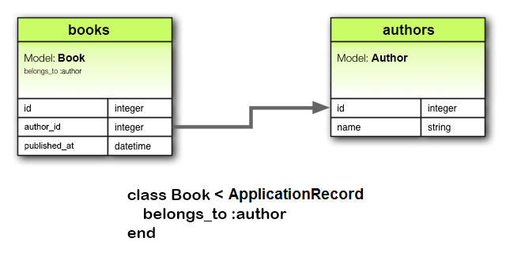
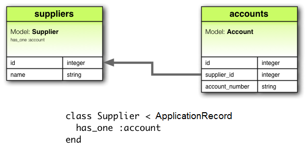
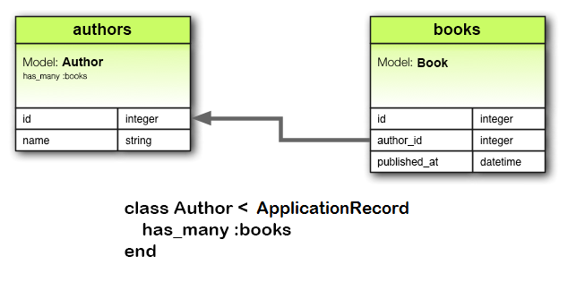
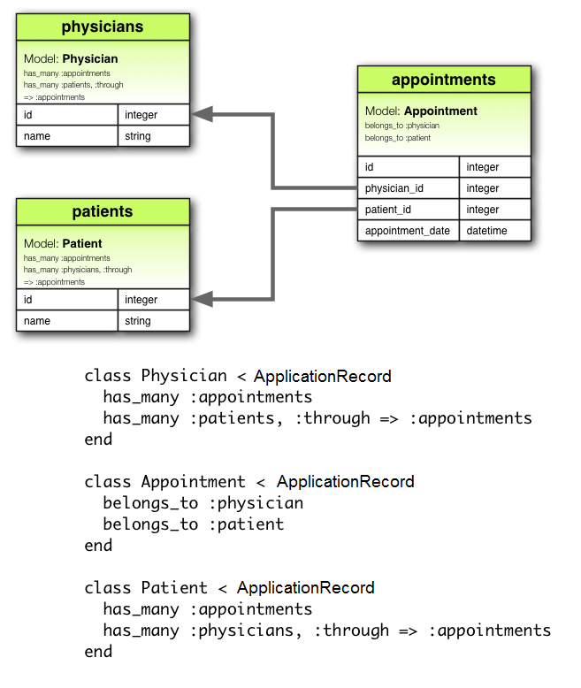
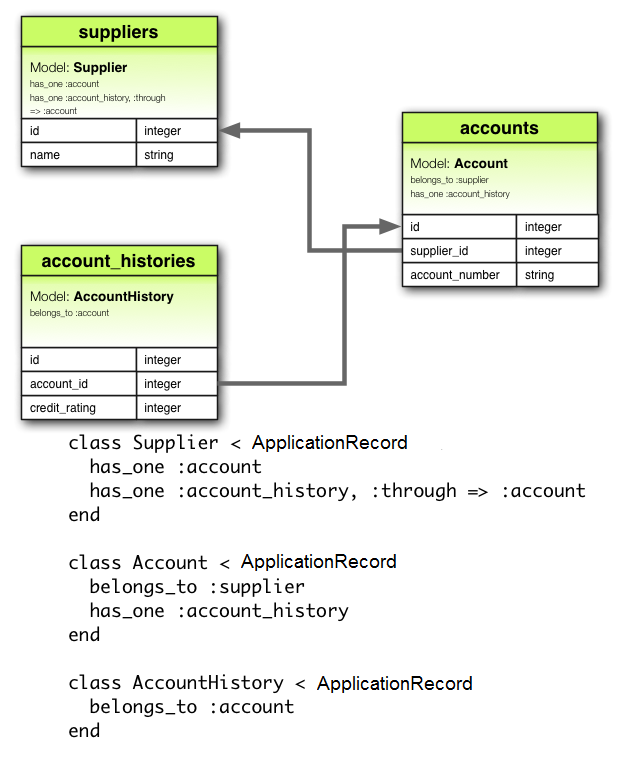
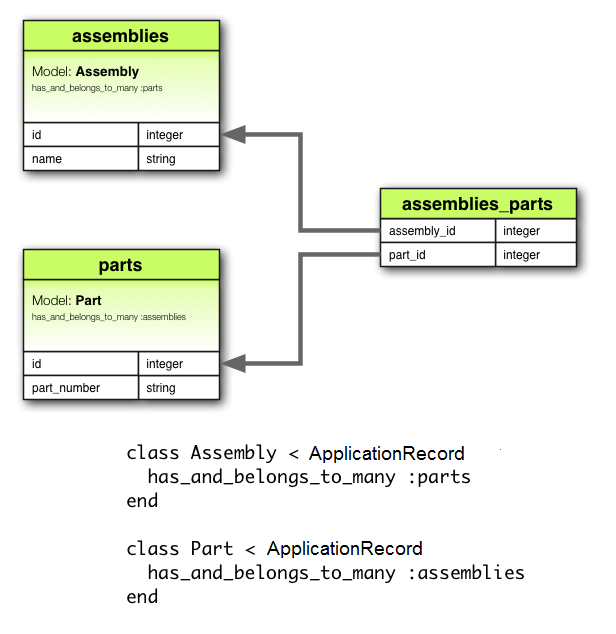
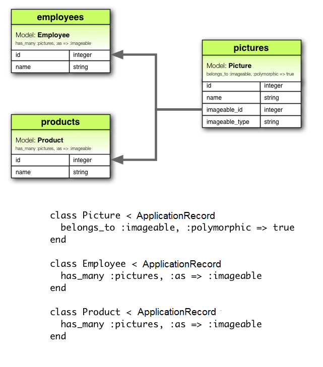

1 ¿Por qué Asociaciones?
En Rails, una asociación es una conexión entre dos modelos de Active Record. ¿Por qué necesitamos asociaciones entre modelos? Porque hacen que las operaciones comunes sean más simples y fáciles en tu código.
Por ejemplo, considera una aplicación simple de Rails que incluye un modelo para autores y un modelo para libros. Cada autor puede tener muchos libros.
Sin asociaciones, las declaraciones de los modelos se verían así:
class Author < ApplicationRecord
end
class Book < ApplicationRecord
end
Ahora, supongamos que queremos agregar un nuevo libro para un autor existente. Necesitaríamos hacer algo como esto:
@book = Book.create(published_at: Time.now, author_id: @author.id)
O considera eliminar un autor y asegurarte de que todos sus libros sean eliminados también:
@books = Book.where(author_id: @author.id)
@books.each do |book|
book.destroy
end
@author.destroy
Con las asociaciones de Active Record, podemos simplificar estas - y otras - operaciones al indicarle declarativamente a Rails que hay una conexión entre los dos modelos. Aquí está el código revisado para configurar autores y libros:
class Author < ApplicationRecord
has_many :books, dependent: :destroy
end
class Book < ApplicationRecord
belongs_to :author
end
Con este cambio, crear un nuevo libro para un autor en particular es más fácil:
@book = @autor.books.create(published_at: Time.now)
Eliminar un autor y todos sus libros es mucho más fácil:
@autor.destroy
Para aprender más sobre los diferentes tipos de asociaciones, lee la siguiente sección de esta guía. Esto es seguido por algunos consejos y trucos para trabajar con asociaciones, y luego por una referencia completa a los métodos y opciones para asociaciones en Rails.
2 Los Tipos de Asociaciones
Rails admite seis tipos de asociaciones, cada una con un caso de uso particular en mente.
Aquí hay una lista de todos los tipos admitidos con un enlace a su documentación API para obtener más información detallada sobre cómo usarlos, sus parámetros de método, etc.
Las asociaciones se implementan utilizando llamadas de estilo macro, para que puedas añadir características de manera declarativa a tus modelos. Por ejemplo, al declarar que un modelo belongs_to otro, le indicas a Rails que mantenga la información de Clave Primaria-Clave Foránea entre instancias de los dos modelos, y también obtienes una serie de métodos de utilidad añadidos a tu modelo.
En el resto de esta guía, aprenderás cómo declarar y usar las diversas formas de asociaciones. Pero primero, una breve introducción a las situaciones donde cada tipo de asociación es apropiado.
2.1 La Asociación belongs_to
Una asociación belongs_to establece una conexión con otro modelo, de tal manera que cada instancia del modelo que declara "pertenece a" una instancia del otro modelo. Por ejemplo, si tu aplicación incluye autores y libros, y cada libro puede ser asignado a exactamente un autor, declararías el modelo de libro de esta manera:
class Book < ApplicationRecord
belongs_to :author
end

NOTA: Las asociaciones belongs_to deben usar el término singular. Si usas la forma pluralizada en el ejemplo anterior para la asociación author en el modelo Book e intentas crear la instancia mediante Book.create(authors: @autor), se te dirá que hay una "constante no inicializada Book::Authors". Esto se debe a que Rails infiere automáticamente el nombre de la clase a partir del nombre de la asociación. Si el nombre de la asociación está mal pluralizado, entonces la clase inferida también estará mal pluralizada.
La migración correspondiente podría verse así:
class CreateBooks < ActiveRecord::Migration[7.2]
def change
create_table :authors do |t|
t.string :name
t.timestamps
end
create_table :books do |t|
t.belongs_to :author
t.datetime :published_at
t.timestamps
end
end
end
Cuando se usa solo, belongs_to produce una conexión unidireccional uno a uno. Por lo tanto, cada libro en el ejemplo anterior "conoce" a su autor, pero los autores no conocen sus libros.
Para configurar una asociación bidireccional - usa belongs_to en combinación con un has_one o has_many en el otro modelo, en este caso el modelo Author.
belongs_to no asegura la consistencia de referencia si optional está configurado como verdadero, por lo que dependiendo del caso de uso, también podrías necesitar agregar una restricción de clave foránea a nivel de base de datos en la columna de referencia, así:
create_table :books do |t|
t.belongs_to :author, foreign_key: true
# ...
end
2.2 La Asociación has_one
Una asociación has_one indica que otro modelo tiene una referencia a este modelo. Ese modelo se puede obtener a través de esta asociación.
Por ejemplo, si cada proveedor en tu aplicación tiene solo una cuenta, declararías el modelo de proveedor así:
class Supplier < ApplicationRecord
has_one :account
end
La principal diferencia con belongs_to es que la columna de enlace supplier_id se encuentra en la otra tabla:

La migración correspondiente podría verse así:
class CreateSuppliers < ActiveRecord::Migration[7.2]
def change
create_table :suppliers do |t|
t.string :name
t.timestamps
end
create_table :accounts do |t|
t.belongs_to :supplier
t.string :account_number
t.timestamps
end
end
end
Dependiendo del caso de uso, también podrías necesitar crear un índice único y/o una restricción de clave foránea en la columna de proveedor para la tabla de cuentas. En este caso, la definición de la columna podría verse así:
create_table :accounts do |t|
t.belongs_to :supplier, index: { unique: true }, foreign_key: true
# ...
end
Esta relación puede ser bidireccional cuando se usa en combinación con belongs_to en el otro modelo.
2.3 La Asociación has_many
Una asociación has_many es similar a has_one, pero indica una conexión uno a muchos con otro modelo. A menudo encontrarás esta asociación en el "otro lado" de una asociación belongs_to. Esta asociación indica que cada instancia del modelo tiene cero o más instancias de otro modelo. Por ejemplo, en una aplicación que contiene autores y libros, el modelo de autor podría ser declarado así:
class Author < ApplicationRecord
has_many :books
end
NOTA: El nombre del otro modelo se pluraliza al declarar una asociación has_many.

La migración correspondiente podría verse así:
class CreateAuthors < ActiveRecord::Migration[7.2]
def change
create_table :authors do |t|
t.string :name
t.timestamps
end
create_table :books do |t|
t.belongs_to :author
t.datetime :published_at
t.timestamps
end
end
end
Dependiendo del caso de uso, generalmente es una buena idea crear un índice no único y opcionalmente una restricción de clave foránea en la columna de autor para la tabla de libros:
create_table :books do |t|
t.belongs_to :author, index: true, foreign_key: true
# ...
end
2.4 La Asociación has_many :through
Una asociación has_many :through se utiliza a menudo para configurar una conexión muchos a muchos con otro modelo. Esta asociación indica que el modelo declarante puede coincidir con cero o más instancias de otro modelo al proceder a través de un tercer modelo. Por ejemplo, considera una práctica médica donde los pacientes hacen citas para ver a los médicos. Las declaraciones de asociación relevantes podrían verse así:
class Physician < ApplicationRecord
has_many :appointments
has_many :patients, through: :appointments
end
class Appointment < ApplicationRecord
belongs_to :physician
belongs_to :patient
end
class Patient < ApplicationRecord
has_many :appointments
has_many :physicians, through: :appointments
end

La migración correspondiente podría verse así:
class CreateAppointments < ActiveRecord::Migration[7.2]
def change
create_table :physicians do |t|
t.string :name
t.timestamps
end
create_table :patients do |t|
t.string :name
t.timestamps
end
create_table :appointments do |t|
t.belongs_to :physician
t.belongs_to :patient
t.datetime :appointment_date
t.timestamps
end
end
end
La colección de modelos de unión puede ser gestionada a través de los métodos de asociación has_many. Por ejemplo, si asignas:
physician.patients = patients
Entonces se crean automáticamente nuevos modelos de unión para los objetos recién asociados. Si algunos que existían previamente ahora faltan, entonces sus filas de unión se eliminan automáticamente.
ADVERTENCIA: La eliminación automática de modelos de unión es directa, no se activan callbacks de destrucción.
La asociación has_many :through también es útil para configurar "atajos" a través de asociaciones has_many anidadas. Por ejemplo, si un documento tiene muchas secciones, y una sección tiene muchos párrafos, a veces puedes querer obtener una colección simple de todos los párrafos en el documento. Podrías configurarlo de esta manera:
class Document < ApplicationRecord
has_many :sections
has_many :paragraphs, through: :sections
end
class Section < ApplicationRecord
belongs_to :document
has_many :paragraphs
end
class Paragraph < ApplicationRecord
belongs_to :section
end
Con through: :sections especificado, Rails ahora entenderá:
@document.paragraphs
2.5 La Asociación has_one :through
Una asociación has_one :through establece una conexión uno a uno con otro modelo. Esta asociación indica
que el modelo declarante puede coincidir con una instancia de otro modelo al proceder a través de un tercer modelo.
Por ejemplo, si cada proveedor tiene una cuenta, y cada cuenta está asociada con un historial de cuenta, entonces el
modelo de proveedor podría verse así:
class Supplier < ApplicationRecord
has_one :account
has_one :account_history, through: :account
end
class Account < ApplicationRecord
belongs_to :supplier
has_one :account_history
end
class AccountHistory < ApplicationRecord
belongs_to :account
end

La migración correspondiente podría verse así:
class CreateAccountHistories < ActiveRecord::Migration[7.2]
def change
create_table :suppliers do |t|
t.string :name
t.timestamps
end
create_table :accounts do |t|
t.belongs_to :supplier
t.string :account_number
t.timestamps
end
create_table :account_histories do |t|
t.belongs_to :account
t.integer :credit_rating
t.timestamps
end
end
end
2.6 La Asociación has_and_belongs_to_many
Una asociación has_and_belongs_to_many crea una conexión directa muchos a muchos con otro modelo, sin un modelo intermedio.
Esta asociación indica que cada instancia del modelo declarante se refiere a cero o más instancias de otro modelo.
Por ejemplo, si tu aplicación incluye ensamblajes y partes, con cada ensamblaje teniendo muchas partes y cada parte apareciendo en muchos ensamblajes, podrías declarar los modelos de esta manera:
class Assembly < ApplicationRecord
has_and_belongs_to_many :parts
end
class Part < ApplicationRecord
has_and_belongs_to_many :assemblies
end

La migración correspondiente podría verse así:
class CreateAssembliesAndParts < ActiveRecord::Migration[7.2]
def change
create_table :assemblies do |t|
t.string :name
t.timestamps
end
create_table :parts do |t|
t.string :part_number
t.timestamps
end
create_table :assemblies_parts, id: false do |t|
t.belongs_to :assembly
t.belongs_to :part
end
end
end
2.7 Elegir Entre belongs_to y has_one
Si deseas configurar una relación uno a uno entre dos modelos, necesitarás añadir belongs_to a uno, y has_one al otro. ¿Cómo sabes cuál es cuál?
La distinción está en dónde colocas la clave foránea (va en la tabla para la clase que declara la asociación belongs_to), pero también debes pensar en el significado real de los datos. La relación has_one dice que algo es tuyo, es decir, que algo apunta hacia ti. Por ejemplo, tiene más sentido decir que un proveedor posee una cuenta que decir que una cuenta posee un proveedor. Esto sugiere que las relaciones correctas son así:
class Supplier < ApplicationRecord
has_one :account
end
class Account < ApplicationRecord
belongs_to :supplier
end
La migración correspondiente podría verse así:
class CreateSuppliers < ActiveRecord::Migration[7.2]
def change
create_table :suppliers do |t|
t.string :name
t.timestamps
end
create_table :accounts do |t|
t.bigint :supplier_id
t.string :account_number
t.timestamps
end
add_index :accounts, :supplier_id
end
end
NOTA: Usar t.bigint :supplier_id hace que el nombre de la clave foránea sea obvio y explícito. En las versiones actuales de Rails, puedes abstraer este detalle de implementación usando t.references :supplier en su lugar.
2.8 Elegir Entre has_many :through y has_and_belongs_to_many
Rails ofrece dos formas diferentes de declarar una relación muchos a muchos entre modelos. La primera forma es usar has_and_belongs_to_many, que te permite hacer la asociación directamente:
class Assembly < ApplicationRecord
has_and_belongs_to_many :parts
end
class Part < ApplicationRecord
has_and_belongs_to_many :assemblies
end
La segunda forma de declarar una relación muchos a muchos es usar has_many :through. Esto hace la asociación indirectamente, a través de un modelo de unión:
class Assembly < ApplicationRecord
has_many :manifests
has_many :parts, through: :manifests
end
class Manifest < ApplicationRecord
belongs_to :assembly
belongs_to :part
end
class Part < ApplicationRecord
has_many :manifests
has_many :assemblies, through: :manifests
end
La regla más simple es que debes configurar una relación has_many :through si necesitas trabajar con el modelo de relación como una entidad independiente. Si no necesitas hacer nada con el modelo de relación, puede ser más sencillo configurar una relación has_and_belongs_to_many (aunque necesitarás recordar crear la tabla de unión en la base de datos).
Debes usar has_many :through si necesitas validaciones, callbacks, o atributos extra en el modelo de unión.
Mientras que has_and_belongs_to_many sugiere crear una tabla de unión sin clave primaria mediante id: false, considera usar una clave primaria compuesta para la tabla de unión en la relación has_many :through.
Por ejemplo, se recomienda usar create_table :manifests, primary_key: [:assembly_id, :part_id] en el ejemplo anterior.
2.9 Asociaciones Polimórficas
Un giro un poco más avanzado en las asociaciones es la asociación polimórfica. Con las asociaciones polimórficas, un modelo puede pertenecer a más de un otro modelo, en una sola asociación. Por ejemplo, podrías tener un modelo de imagen que pertenece a un modelo de empleado o a un modelo de producto. Así es como esto podría ser declarado:
class Picture < ApplicationRecord
belongs_to :imageable, polymorphic: true
end
class Employee < ApplicationRecord
has_many :pictures, as: :imageable
end
class Product < ApplicationRecord
has_many :pictures, as: :imageable
end
Puedes pensar en una declaración belongs_to polimórfica como configurar una interfaz que cualquier otro modelo puede usar. Desde una instancia del modelo Employee, puedes recuperar una colección de imágenes: @employee.pictures.
De manera similar, puedes recuperar @product.pictures.
Si tienes una instancia del modelo Picture, puedes llegar a su padre a través de @picture.imageable. Para hacer que esto funcione, necesitas declarar tanto una columna de clave foránea como una columna de tipo en el modelo que declara la interfaz polimórfica:
class CreatePictures < ActiveRecord::Migration[7.2]
def change
create_table :pictures do |t|
t.string :name
t.bigint :imageable_id
t.string :imageable_type
t.timestamps
end
add_index :pictures, [:imageable_type, :imageable_id]
end
end
Esta migración puede simplificarse usando el formulario t.references:
class CreatePictures < ActiveRecord::Migration[7.2]
def change
create_table :pictures do |t|
t.string :name
t.references :imageable, polymorphic: true
t.timestamps
end
end
end
NOTA: Dado que las asociaciones polimórficas dependen de almacenar nombres de clases en la base de datos, esos datos deben permanecer sincronizados con el nombre de clase utilizado por el código Ruby. Al renombrar una clase, asegúrate de actualizar los datos en la columna de tipo polimórfico.

2.10 Asociaciones entre Modelos con Claves Primarias Compuestas
Rails a menudo puede inferir la información de clave primaria - clave foránea entre modelos asociados con claves primarias compuestas sin necesidad de información adicional. Toma el siguiente ejemplo:
class Order < ApplicationRecord
self.primary_key = [:shop_id, :id]
has_many :books
end
class Book < ApplicationRecord
belongs_to :order
end
Aquí, Rails asume que la columna :id debería usarse como la clave primaria para la asociación entre un pedido y sus libros, al igual que con una asociación regular has_many / belongs_to. Inferirá que la columna de clave foránea en la tabla books es :order_id. Acceder al pedido de un libro:
order = Order.create!(id: [1, 2], status: "pending")
book = order.books.create!(title: "A Cool Book")
book.reload.order
generará la siguiente SQL para acceder al pedido:
SELECT * FROM orders WHERE id = 2
Esto solo funciona si la clave primaria compuesta del modelo contiene la columna :id, y la columna es única para todos los registros. Para usar la clave primaria compuesta completa en asociaciones, configura la opción foreign_key: en la asociación. Esta opción especifica una clave foránea compuesta en la asociación: todas las columnas en la clave foránea se usarán al consultar el(los) registro(s) asociado(s). Por ejemplo:
class Author < ApplicationRecord
self.primary_key = [:first_name, :last_name]
has_many :books, foreign_key: [:first_name, :last_name]
end
class Book < ApplicationRecord
belongs_to :author, foreign_key: [:author_first_name, :author_last_name]
end
Acceder al autor de un libro:
author = Author.create!(first_name: "Jane", last_name: "Doe")
book = author.books.create!(title: "A Cool Book")
book.reload.author
usará :first_name y :last_name en la consulta SQL:
SELECT * FROM authors WHERE first_name = 'Jane' AND last_name = 'Doe'
2.11 Auto Uniones
Al diseñar un modelo de datos, a veces encontrarás un modelo que debería tener una relación consigo mismo. Por ejemplo, podrías querer almacenar todos los empleados en un solo modelo de base de datos, pero poder rastrear relaciones como entre gerente y subordinados. Esta situación puede modelarse con asociaciones de auto unión:
class Employee < ApplicationRecord
has_many :subordinates, class_name: "Employee",
foreign_key: "manager_id"
belongs_to :manager, class_name: "Employee", optional: true
end
Con esta configuración, puedes recuperar @employee.subordinates y @employee.manager.
En tus migraciones/esquema, añadirás una columna de referencias al propio modelo.
class CreateEmployees < ActiveRecord::Migration[7.2]
def change
create_table :employees do |t|
t.references :manager, foreign_key: { to_table: :employees }
t.timestamps
end
end
end
NOTA: La opción to_table pasada a foreign_key y más se explican en SchemaStatements#add_reference.
3 Consejos, Trucos y Advertencias
Aquí hay algunas cosas que deberías saber para hacer un uso eficiente de las asociaciones de Active Record en tus aplicaciones Rails:
- Controlar el almacenamiento en caché
- Evitar colisiones de nombres
- Actualizar el esquema
- Controlar el alcance de la asociación
- Asociaciones bidireccionales
3.1 Controlar el Almacenamiento en Caché
Todos los métodos de asociación están construidos alrededor del almacenamiento en caché, que mantiene el resultado de la consulta más reciente disponible para operaciones posteriores. El caché incluso se comparte entre métodos. Por ejemplo:
# recupera libros de la base de datos
author.books.load
# usa la copia en caché de los libros
author.books.size
# usa la copia en caché de los libros
author.books.empty?
Pero, ¿qué pasa si quieres recargar el caché, porque los datos podrían haber sido cambiados por alguna otra parte de la aplicación? Simplemente llama a reload en la asociación:
# recupera libros de la base de datos
author.books.load
# usa la copia en caché de los libros
author.books.size
# descarta la copia en caché de los libros y vuelve a la base de datos
author.books.reload.empty?
3.2 Evitar Colisiones de Nombres
No eres libre de usar cualquier nombre para tus asociaciones. Debido a que crear una asociación añade un método con ese nombre al modelo, es una mala idea darle a una asociación un nombre que ya esté usado para un método de instancia de ActiveRecord::Base. El método de asociación sobrescribiría el método base y rompería las cosas. Por ejemplo, attributes o connection son malos nombres para asociaciones.
3.3 Actualizar el Esquema
Las asociaciones son extremadamente útiles, pero no son mágicas. Eres responsable de mantener tu esquema de base de datos para que coincida con tus asociaciones. En la práctica, esto significa dos cosas, dependiendo de qué tipo de asociaciones estés creando. Para las asociaciones belongs_to necesitas crear claves foráneas, y para las asociaciones has_and_belongs_to_many necesitas crear la tabla de unión apropiada.
3.3.1 Crear Claves Foráneas para Asociaciones belongs_to
Cuando declaras una asociación belongs_to, necesitas crear claves foráneas según sea apropiado. Por ejemplo, considera este modelo:
class Book < ApplicationRecord
belongs_to :author
end
Esta declaración necesita estar respaldada por una columna de clave foránea correspondiente en la tabla de libros. Para una tabla completamente nueva, la migración podría verse algo así:
class CreateBooks < ActiveRecord::Migration[7.2]
def change
create_table :books do |t|
t.datetime :published_at
t.string :book_number
t.references :author
end
end
end
Mientras que para una tabla existente, podría verse así:
class AddAuthorToBooks < ActiveRecord::Migration[7.2]
def change
add_reference :books, :author
end
end
NOTA: Si deseas hacer cumplir la integridad referencial a nivel de base de datos, añade la opción foreign_key: true a las declaraciones de columna ‘reference’ anteriores.
3.3.2 Crear Tablas de Unión para Asociaciones has_and_belongs_to_many
Si creas una asociación has_and_belongs_to_many, necesitas crear explícitamente la tabla de unión. A menos que el nombre de la tabla de unión se especifique explícitamente usando la opción :join_table, Active Record crea el nombre usando el orden léxico de los nombres de clase. Así que una unión entre modelos author y book dará el nombre de tabla de unión predeterminado de "authors_books" porque "a" supera a "b" en el orden léxico.
ADVERTENCIA: La precedencia entre nombres de modelo se calcula usando el operador <=> para String. Esto significa que si las cadenas son de diferentes longitudes, y las cadenas son iguales cuando se comparan hasta la longitud más corta, entonces la cadena más larga se considera de mayor precedencia léxica que la más corta. Por ejemplo, uno esperaría que las tablas "paper_boxes" y "papers" generen un nombre de tabla de unión de "papers_paper_boxes" debido a la longitud del nombre "paper_boxes", pero de hecho genera un nombre de tabla de unión de "paper_boxes_papers" (porque el guion bajo '_' es lexicográficamente menos que 's' en codificaciones comunes).
Cualquiera que sea el nombre, debes generar manualmente la tabla de unión con una migración apropiada. Por ejemplo, considera estas asociaciones:
class Assembly < ApplicationRecord
has_and_belongs_to_many :parts
end
class Part < ApplicationRecord
has_and_belongs_to_many :assemblies
end
Estas deben estar respaldadas por una migración para crear la tabla assemblies_parts. Esta tabla debe crearse sin una clave primaria:
class CreateAssembliesPartsJoinTable < ActiveRecord::Migration[7.2]
def change
create_table :assemblies_parts, id: false do |t|
t.bigint :assembly_id
t.bigint :part_id
end
add_index :assemblies_parts, :assembly_id
add_index :assemblies_parts, :part_id
end
end
Pasamos id: false a create_table porque esa tabla no representa un modelo. Eso es necesario para que la asociación funcione correctamente. Si observas algún comportamiento extraño en una asociación has_and_belongs_to_many como identificadores de modelo alterados, o excepciones sobre identificadores en conflicto, lo más probable es que hayas olvidado ese detalle.
Para mayor simplicidad, también puedes usar el método create_join_table:
class CreateAssembliesPartsJoinTable < ActiveRecord::Migration[7.2]
def change
create_join_table :assemblies, :parts do |t|
t.index :assembly_id
t.index :part_id
end
end
end
3.4 Controlar el Alcance de la Asociación
Por defecto, las asociaciones buscan objetos solo dentro del alcance del módulo actual. Esto puede ser importante cuando declaras modelos de Active Record dentro de un módulo. Por ejemplo:
module MyApplication
module Business
class Supplier < ApplicationRecord
has_one :account
end
class Account < ApplicationRecord
belongs_to :supplier
end
end
end
Esto funcionará bien, porque tanto la clase Supplier como la clase Account están definidas dentro del mismo ámbito (MyApplication::Business). Esta organización permite estructurar modelos en carpetas basadas en su ámbito, sin tener que añadir explícitamente el ámbito a cada asociación:
# app/models/my_application/business/supplier.rb
module MyApplication
module Business
class Supplier < ApplicationRecord
has_one :account
end
end
end
# app/models/my_application/business/account.rb
module MyApplication
module Business
class Account < ApplicationRecord
belongs_to :supplier
end
end
end
Es crucial notar que esto no afecta el nombramiento de tus tablas. Por ejemplo, si hay un modelo MyApplication::Business::Supplier, también debe haber una tabla my_application_business_suppliers.
Ten en cuenta que lo siguiente no funcionará, porque Supplier y Account están definidos en diferentes ámbitos (MyApplication::Business y MyApplication::Billing):
module MyApplication
module Business
class Supplier < ApplicationRecord
has_one :account
end
end
module Billing
class Account < ApplicationRecord
belongs_to :supplier
end
end
end
Para asociar un modelo con un modelo en un espacio de nombres diferente, debes especificar el nombre completo de la clase en tu declaración de asociación:
module MyApplication
module Business
class Supplier < ApplicationRecord
has_one :account,
class_name: "MyApplication::Billing::Account"
end
end
module Billing
class Account < ApplicationRecord
belongs_to :supplier,
class_name: "MyApplication::Business::Supplier"
end
end
end
3.5 Asociaciones Bidireccionales
Es normal que las asociaciones funcionen en dos direcciones, requiriendo declaración en dos modelos diferentes:
class Author < ApplicationRecord
has_many :books
end
class Book < ApplicationRecord
belongs_to :author
end
Active Record intentará identificar automáticamente que estos dos modelos comparten una asociación bidireccional basada en el nombre de la asociación. Esta información permite a Active Record:
Evitar consultas innecesarias para datos ya cargados:
irb> author = Author.first irb> author.books.all? do |book| irb> book.author.equal?(author) # No se ejecutan consultas adicionales aquí irb> end => trueEvitar datos inconsistentes (ya que solo hay una copia del objeto
Authorcargado):irb> author = Author.first irb> book = author.books.first irb> author.name == book.author.name => true irb> author.name = "Nombre Cambiado" irb> author.name == book.author.name => trueGuardar automáticamente asociaciones en más casos:
irb> author = Author.new irb> book = author.books.new irb> book.save! irb> book.persisted? => true irb> author.persisted? => trueValidar la presencia y ausencia de asociaciones en más casos:
irb> book = Book.new irb> book.valid? => false irb> book.errors.full_messages => ["Author must exist"] irb> author = Author.new irb> book = author.books.new irb> book.valid? => true
Active Record admite la identificación automática para la mayoría de las asociaciones con nombres estándar. Sin embargo, las asociaciones bidireccionales que contienen las opciones :through o :foreign_key no se identificarán automáticamente.
Los alcances personalizados en la asociación opuesta también evitan la identificación automática, al igual que los alcances personalizados en la propia asociación a menos que config.active_record.automatic_scope_inversing esté configurado como verdadero (el valor predeterminado para nuevas aplicaciones).
Por ejemplo, considera las siguientes declaraciones de modelo:
class Author < ApplicationRecord
has_many :books
end
class Book < ApplicationRecord
belongs_to :writer, class_name: 'Author', foreign_key: 'author_id'
end
Debido a la opción :foreign_key, Active Record ya no reconocerá automáticamente la asociación bidireccional. Esto puede causar que tu aplicación:
Ejecute consultas innecesarias para los mismos datos (en este ejemplo causando consultas N+1):
irb> author = Author.first irb> author.books.any? do |book| irb> book.writer.equal?(author) # Esto ejecuta una consulta de autor para cada libro irb> end => falseReferenciar múltiples copias de un modelo con datos inconsistentes:
irb> author = Author.first irb> book = author.books.first irb> author.name == book.writer.name => true irb> author.name = "Nombre Cambiado" irb> author.name == book.writer.name => falseNo guardar automáticamente asociaciones:
irb> author = Author.new irb> book = author.books.new irb> book.save! irb> book.persisted? => true irb> author.persisted? => falseNo validar presencia o ausencia:
irb> author = Author.new irb> book = author.books.new irb> book.valid? => false irb> book.errors.full_messages => ["Author must exist"]
Active Record proporciona la opción :inverse_of para que puedas declarar explícitamente asociaciones bidireccionales:
class Author < ApplicationRecord
has_many :books, inverse_of: 'writer'
end
class Book < ApplicationRecord
belongs_to :writer, class_name: 'Author', foreign_key: 'author_id'
end
Al incluir la opción :inverse_of en la declaración de asociación has_many,
Active Record ahora reconocerá la asociación bidireccional y se comportará como en
los ejemplos iniciales anteriores.
4 Referencia Detallada de Asociaciones
Las siguientes secciones proporcionan los detalles de cada tipo de asociación, incluidos los métodos que añaden y las opciones que puedes usar al declarar una asociación.
4.1 Referencia de la Asociación belongs_to
En términos de base de datos, la asociación belongs_to dice que la tabla de este modelo contiene una columna que representa una referencia a otra tabla.
Esto se puede usar para configurar relaciones uno a uno o uno a muchos, dependiendo de la configuración.
Si la tabla de la otra clase contiene la referencia en una relación uno a uno, entonces deberías usar has_one en su lugar.
4.1.1 Métodos Añadidos por belongs_to
Cuando declaras una asociación belongs_to, la clase declarante gana automáticamente 8 métodos relacionados con la asociación:
associationassociation=(associate)build_association(attributes = {})create_association(attributes = {})create_association!(attributes = {})reload_associationreset_associationassociation_changed?association_previously_changed?
En todos estos métodos, association se reemplaza con el símbolo pasado como primer argumento a belongs_to. Por ejemplo, dada la declaración:
class Book < ApplicationRecord
belongs_to :author
end
Cada instancia del modelo Book tendrá estos métodos:
authorauthor=build_authorcreate_authorcreate_author!reload_authorreset_authorauthor_changed?author_previously_changed?
NOTA: Al inicializar una nueva asociación has_one o belongs_to debes usar el prefijo build_ para construir la asociación, en lugar del método association.build que se usaría para asociaciones has_many o has_and_belongs_to_many. Para crear una, usa el prefijo create_.
4.1.1.1 association
El método association devuelve el objeto asociado, si lo hay. Si no se encuentra ningún objeto asociado, devuelve nil.
@author = @book.author
Si el objeto asociado ya ha sido recuperado de la base de datos para este objeto, se devolverá la versión en caché. Para anular este comportamiento (y forzar una lectura de la base de datos), llama a #reload_association en el objeto padre.
@author = @book.reload_author
Para descargar la versión en caché del objeto asociado, causando que el próximo acceso, si lo hay, lo consulte desde la base de datos, llama a #reset_association en el objeto padre.
@book.reset_author
4.1.1.2 association=(associate)
El método association= asigna un objeto asociado a este objeto. Detrás de escena, esto significa extraer la clave primaria del objeto asociado y establecer la clave foránea de este objeto en el mismo valor.
@book.author = @autor
4.1.1.3 build_association(attributes = {})
El método build_association devuelve un nuevo objeto del tipo asociado. Este objeto se instanciará a partir de los atributos pasados, y el enlace a través de la clave foránea de este objeto se establecerá, pero el objeto asociado no se guardará aún.
@autor = @book.build_author(author_number: 123,
author_name: "John Doe")
4.1.1.4 create_association(attributes = {})
El método create_association devuelve un nuevo objeto del tipo asociado. Este objeto se instanciará a partir de los atributos pasados, el enlace a través de la clave foránea de este objeto se establecerá, y, una vez que pase todas las validaciones especificadas en el modelo asociado, el objeto asociado se guardará.
@autor = @book.create_author(author_number: 123,
author_name: "John Doe")
4.1.1.5 create_association!(attributes = {})
Hace lo mismo que create_association arriba, pero lanza ActiveRecord::RecordInvalid si el registro es inválido.
4.1.1.6 association_changed?
El método association_changed? devuelve verdadero si se ha asignado un nuevo objeto asociado y la clave foránea se actualizará en la próxima guardada.
@book.author # => #<Author author_number: 123, author_name: "John Doe">
@book.author_changed? # => false
@book.author = Author.second # => #<Author author_number: 456, author_name: "Jane Smith">
@book.author_changed? # => true
@book.save!
@book.author_changed? # => false
4.1.1.7 association_previously_changed?
El método association_previously_changed? devuelve verdadero si la guardada anterior actualizó la asociación para referenciar un nuevo objeto asociado.
@book.author # => #<Author author_number: 123, author_name: "John Doe">
@book.author_previously_changed? # => false
@book.author = Author.second # => #<Author author_number: 456, author_name: "Jane Smith">
@book.save!
@book.author_previously_changed? # => true
4.1.2 Opciones para belongs_to
Mientras que Rails usa valores predeterminados inteligentes que funcionarán bien en la mayoría de las situaciones, puede haber ocasiones en las que desees personalizar el comportamiento de la referencia de asociación belongs_to. Tales personalizaciones pueden lograrse fácilmente pasando opciones y bloques de alcance cuando creas la asociación. Por ejemplo, esta asociación usa dos de esas opciones:
class Book < ApplicationRecord
belongs_to :author, touch: :books_updated_at,
counter_cache: true
end
La asociación belongs_to admite estas opciones:
:autosave:class_name:counter_cache:default:dependent:ensuring_owner_was:foreign_key:foreign_type:primary_key:inverse_of:optional:polymorphic:required:strict_loading:touch:validate
4.1.2.1 :autosave
Si configuras la opción :autosave a true, Rails guardará cualquier miembro de asociación cargado y destruirá miembros que estén marcados para destrucción cada vez que guardes el objeto padre. Configurar :autosave a false no es lo mismo que no configurar la opción :autosave. Si la opción :autosave no está presente, entonces se guardarán nuevos objetos asociados, pero no se guardarán los objetos asociados actualizados.
4.1.2.2 :class_name
Si el nombre del otro modelo no puede derivarse del nombre de la asociación, puedes usar la opción :class_name para proporcionar el nombre del modelo. Por ejemplo, si un libro pertenece a un autor, pero el nombre real del modelo que contiene autores es Patron, lo configurarías de esta manera:
class Book < ApplicationRecord
belongs_to :author, class_name: "Patron"
end
4.1.2.3 :counter_cache
La opción :counter_cache puede usarse para hacer que encontrar el número de objetos pertenecientes sea más eficiente. Considera estos modelos:
class Book < ApplicationRecord
belongs_to :author
end
class Author < ApplicationRecord
has_many :books
end
Con estas declaraciones, pedir el valor de @autor.books.size requiere hacer una llamada a la base de datos para realizar una consulta COUNT(*). Para evitar esta llamada, puedes añadir un contador de caché al modelo perteneciente:
class Book < ApplicationRecord
belongs_to :author, counter_cache: true
end
class Author < ApplicationRecord
has_many :books
end
Con esta declaración, Rails mantendrá el valor de la caché actualizado, y luego devolverá ese valor en respuesta al método size.
Aunque la opción :counter_cache se especifica en el modelo que incluye
la declaración belongs_to, la columna real debe añadirse al
modelo asociado (has_many). En el caso anterior, necesitarías añadir una
columna llamada books_count al modelo Author.
Puedes anular el nombre de columna predeterminado especificando un nombre de columna personalizado en
la declaración counter_cache en lugar de true. Por ejemplo, para usar
count_of_books en lugar de books_count:
class Book < ApplicationRecord
belongs_to :author, counter_cache: :count_of_books
end
class Author < ApplicationRecord
has_many :books
end
NOTA: Solo necesitas especificar la opción :counter_cache en el lado belongs_to
de la asociación.
Comenzar a usar contadores de caché en tablas grandes existentes puede ser problemático, porque los valores de las columnas deben ser completados por separado de la adición de la columna (para no bloquear la tabla por demasiado tiempo) y antes del uso de :counter_cache (de lo contrario, métodos como size/any?/etc, que usan
contadores de caché internamente, pueden producir resultados incorrectos). Para completar de manera segura los valores mientras se mantienen las columnas de contador de caché actualizadas con la creación/eliminación de registros secundarios y para evitar que los métodos mencionados usen los valores de columna de contador de caché posiblemente incorrectos y siempre obtengan los resultados de la base de datos, usa counter_cache: { active: false }. Si también necesitas especificar un nombre de columna personalizado, usa counter_cache: { active: false, column: :my_custom_counter }.
Si por alguna razón cambias el valor de la clave primaria de un modelo propietario, y no
actualizas también las claves foráneas de los modelos contados, entonces el contador de caché
puede tener datos obsoletos. En otras palabras, cualquier modelo huérfano seguirá contando
hacia el contador. Para corregir un contador de caché obsoleto, usa reset_counters.
4.1.2.4 :default
Cuando se establece en true, la asociación no tendrá su presencia validada.
4.1.2.5 :dependent
Si configuras la opción :dependent a:
:destroy, cuando el objeto se destruye, se llamarádestroyen sus objetos asociados.:delete, cuando el objeto se destruye, todos sus objetos asociados serán eliminados directamente de la base de datos sin llamar a su métododestroy.:destroy_async: cuando el objeto se destruye, se encola un trabajoActiveRecord::DestroyAssociationAsyncJobque llamará a destruir en sus objetos asociados. Active Job debe estar configurado para que esto funcione. No uses esta opción si la asociación está respaldada por restricciones de clave foránea en tu base de datos. Las acciones de restricción de clave foránea ocurrirán dentro de la misma transacción que elimina a su propietario.
ADVERTENCIA: No debes especificar esta opción en una asociación belongs_to que esté conectada con una asociación has_many en la otra clase. Hacerlo puede llevar a registros huérfanos en tu base de datos.
4.1.2.6 :ensuring_owner_was
Especifica un método de instancia para ser llamado en el propietario. El método debe devolver verdadero para que los registros asociados sean eliminados en un trabajo en segundo plano.
4.1.2.7 :foreign_key
Por convención, Rails asume que la columna utilizada para mantener la clave foránea en este modelo es el nombre de la asociación con el sufijo _id añadido. La opción :foreign_key te permite establecer el nombre de la clave foránea directamente:
class Book < ApplicationRecord
belongs_to :author, class_name: "Patron",
foreign_key: "patron_id"
end
CONSEJO: En cualquier caso, Rails no creará columnas de clave foránea para ti. Necesitas definirlas explícitamente como parte de tus migraciones.
4.1.2.8 :foreign_type
Especifica la columna utilizada para almacenar el tipo de objeto asociado, si esta es una asociación polimórfica. Por defecto, se supone que es el nombre de la asociación con un sufijo “_type”. Por lo tanto, una clase que define una asociación belongs_to :taggable, polymorphic: true usará “taggable_type” como el :foreign_type predeterminado.
4.1.2.9 :primary_key
Por convención, Rails asume que la columna id se utiliza para mantener la clave primaria
de sus tablas. La opción :primary_key te permite especificar una columna diferente.
Por ejemplo, dado que tenemos una tabla users con guid como clave primaria. Si queremos que una tabla todos separada mantenga la clave foránea user_id en la columna guid, entonces podemos usar primary_key para lograr esto de la siguiente manera:
class User < ApplicationRecord
self.primary_key = 'guid' # la clave primaria es guid y no id
end
class Todo < ApplicationRecord
belongs_to :user, primary_key: 'guid'
end
Cuando ejecutamos @user.todos.create entonces el registro @todo tendrá su
valor user_id como el valor guid de @user.
4.1.2.10 :inverse_of
La opción :inverse_of especifica el nombre de la asociación has_many o has_one que es la inversa de esta asociación.
Consulta la sección asociación bidireccional para más detalles.
class Author < ApplicationRecord
has_many :books, inverse_of: :author
end
class Book < ApplicationRecord
belongs_to :author, inverse_of: :books
end
4.1.2.11 :optional
Si configuras la opción :optional a true, entonces la presencia del objeto asociado no se validará. Por defecto, esta opción está configurada como false.
4.1.2.12 :polymorphic
Pasar true a la opción :polymorphic indica que esta es una asociación polimórfica. Las asociaciones polimórficas se discutieron en detalle anteriormente en esta guía.
4.1.2.13 :required
Cuando se establece en true, la asociación también tendrá su presencia validada. Esto validará la asociación en sí, no el id. Puedes usar :inverse_of para evitar una consulta adicional durante la validación.
NOTA: required está configurado como true por defecto y está en desuso. Si no deseas que se valide la presencia de la asociación, usa optional: true.
4.1.2.14 :strict_loading
Hace cumplir la carga estricta cada vez que el registro asociado se carga a través de esta asociación.
4.1.2.15 :touch
Si configuras la opción :touch a true, entonces la marca de tiempo updated_at o updated_on en el objeto asociado se establecerá en el tiempo actual cada vez que este objeto se guarde o elimine:
class Book < ApplicationRecord
belongs_to :author, touch: true
end
class Author < ApplicationRecord
has_many :books
end
En este caso, guardar o eliminar un libro actualizará la marca de tiempo en el autor asociado. También puedes especificar un atributo de marca de tiempo particular para actualizar:
class Book < ApplicationRecord
belongs_to :author, touch: :books_updated_at
end
4.1.2.16 :validate
Si configuras la opción :validate a true, entonces se validarán nuevos objetos asociados cada vez que guardes este objeto. Por defecto, esto es false: no se validarán nuevos objetos asociados cuando se guarde este objeto.
4.1.3 Alcances para belongs_to
Puede haber ocasiones en las que desees personalizar la consulta utilizada por belongs_to. Tales personalizaciones pueden lograrse a través de un bloque de alcance. Por ejemplo:
class Book < ApplicationRecord
belongs_to :author, -> { where active: true }
end
Puedes usar cualquiera de los métodos de consulta estándar dentro del bloque de alcance. Los siguientes se discuten a continuación:
whereincludesreadonlyselect
4.1.3.1 where
El método where te permite especificar las condiciones que debe cumplir el objeto asociado.
class Book < ApplicationRecord
belongs_to :author, -> { where active: true }
end
4.1.3.2 includes
Puedes usar el método includes para especificar asociaciones de segundo orden que deben cargarse de manera ansiosa cuando se usa esta asociación. Por ejemplo, considera estos modelos:
class Chapter < ApplicationRecord
belongs_to :book
end
class Book < ApplicationRecord
belongs_to :author
has_many :chapters
end
class Author < ApplicationRecord
has_many :books
end
Si frecuentemente recuperas autores directamente desde capítulos (@chapter.book.author), entonces puedes hacer tu código algo más eficiente al incluir autores en la asociación de capítulos a libros:
class Chapter < ApplicationRecord
belongs_to :book, -> { includes :author }
end
class Book < ApplicationRecord
belongs_to :author
has_many :chapters
end
class Author < ApplicationRecord
has_many :books
end
NOTA: No hay necesidad de usar includes para asociaciones inmediatas, es decir, si tienes Book belongs_to :author, entonces el autor se carga de manera ansiosa automáticamente cuando se necesita.
4.1.3.3 readonly
Si usas readonly, entonces el objeto asociado será de solo lectura cuando se recupere a través de la asociación.
4.1.3.4 select
El método select te permite anular la cláusula SQL SELECT que se usa para recuperar datos sobre el objeto asociado. Por defecto, Rails recupera todas las columnas.
CONSEJO: Si usas el método select en una asociación belongs_to, también debes configurar la opción :foreign_key para garantizar los resultados correctos.
4.1.4 ¿Existen Objetos Asociados?
Puedes ver si existen objetos asociados usando el método association.nil?:
if @book.author.nil?
@msg = "No se encontró autor para este libro"
end
4.1.5 ¿Cuándo se Guardan los Objetos?
Asignar un objeto a una asociación belongs_to no guarda automáticamente el objeto. Tampoco guarda el objeto asociado.
4.2 Referencia de la Asociación has_one
La asociación has_one crea una coincidencia uno a uno con otro modelo. En términos de base de datos, esta asociación dice que la otra clase contiene la clave foránea. Si esta clase contiene la clave foránea, entonces deberías usar belongs_to en su lugar.
4.2.1 Métodos Añadidos por has_one
Cuando declaras una asociación has_one, la clase declarante gana automáticamente 6 métodos relacionados con la asociación:
associationassociation=(associate)build_association(attributes = {})create_association(attributes = {})create_association!(attributes = {})reload_associationreset_association
En todos estos métodos, association se reemplaza con el símbolo pasado como primer argumento a has_one. Por ejemplo, dada la declaración:
class Supplier < ApplicationRecord
has_one :account
end
Cada instancia del modelo Supplier tendrá estos métodos:
accountaccount=build_accountcreate_accountcreate_account!reload_accountreset_account
NOTA: Al inicializar una nueva asociación has_one o belongs_to debes usar el prefijo build_ para construir la asociación, en lugar del método association.build que se usaría para asociaciones has_many o has_and_belongs_to_many. Para crear una, usa el prefijo create_.
4.2.1.1 association
El método association devuelve el objeto asociado, si lo hay. Si no se encuentra ningún objeto asociado, devuelve nil.
@account = @supplier.account
Si el objeto asociado ya ha sido recuperado de la base de datos para este objeto, se devolverá la versión en caché. Para anular este comportamiento (y forzar una lectura de la base de datos), llama a #reload_association en el objeto padre.
@account = @supplier.reload_account
Para descargar la versión en caché del objeto asociado, forzando que el próximo acceso, si lo hay, lo consulte desde la base de datos, llama a #reset_association en el objeto padre.
@supplier.reset_account
4.2.1.2 association=(associate)
El método association= asigna un objeto asociado a este objeto. Detrás de escena, esto significa extraer la clave primaria de este objeto y establecer la clave foránea del objeto asociado en el mismo valor.
@supplier.account = @account
4.2.1.3 build_association(attributes = {})
El método build_association devuelve un nuevo objeto del tipo asociado. Este objeto se instanciará a partir de los atributos pasados, y el enlace a través de su clave foránea se establecerá, pero el objeto asociado no se guardará aún.
@account = @supplier.build_account(terms: "Net 30")
4.2.1.4 create_association(attributes = {})
El método create_association devuelve un nuevo objeto del tipo asociado. Este objeto se instanciará a partir de los atributos pasados, el enlace a través de su clave foránea se establecerá, y, una vez que pase todas las validaciones especificadas en el modelo asociado, el objeto asociado se guardará.
@account = @supplier.create_account(terms: "Net 30")
4.2.1.5 create_association!(attributes = {})
Hace lo mismo que create_association arriba, pero lanza ActiveRecord::RecordInvalid si el registro es inválido.
4.2.2 Opciones para has_one
Mientras que Rails usa valores predeterminados inteligentes que funcionarán bien en la mayoría de las situaciones, puede haber ocasiones en las que desees personalizar el comportamiento de la referencia de asociación has_one. Tales personalizaciones pueden lograrse fácilmente pasando opciones cuando creas la asociación. Por ejemplo, esta asociación usa dos de esas opciones:
class Supplier < ApplicationRecord
has_one :account, class_name: "Billing", dependent: :nullify
end
La asociación has_one admite estas opciones:
:as:autosave:class_name:dependent:disable_joins:ensuring_owner_was:foreign_key:inverse_of:primary_key:query_constraints:required:source:source_type:strict_loading:through:touch:validate
4.2.2.1 :as
Configurar la opción :as indica que esta es una asociación polimórfica. Las asociaciones polimórficas se discutieron en detalle anteriormente en esta guía.
4.2.2.2 :autosave
Si configuras la opción :autosave a true, Rails guardará cualquier miembro de asociación cargado y destruirá miembros que estén marcados para destrucción cada vez que guardes el objeto padre. Configurar :autosave a false no es lo mismo que no configurar la opción :autosave. Si la opción :autosave no está presente, entonces se guardarán nuevos objetos asociados, pero no se guardarán los objetos asociados actualizados.
4.2.2.3 :class_name
Si el nombre del otro modelo no puede derivarse del nombre de la asociación, puedes usar la opción :class_name para proporcionar el nombre del modelo. Por ejemplo, si un proveedor tiene una cuenta, pero el nombre real del modelo que contiene cuentas es Billing, lo configurarías de esta manera:
class Supplier < ApplicationRecord
has_one :account, class_name: "Billing"
end
4.2.2.4 :dependent
Controla lo que sucede con el objeto asociado cuando su propietario se destruye:
:destroyhace que el objeto asociado también se destruya:deletehace que el objeto asociado se elimine directamente de la base de datos (por lo que no se ejecutarán callbacks):destroy_async: cuando el objeto se destruye, se encola un trabajoActiveRecord::DestroyAssociationAsyncJobque llamará a destruir en sus objetos asociados. Active Job debe estar configurado para que esto funcione. No uses esta opción si la asociación está respaldada por restricciones de clave foránea en tu base de datos. Las acciones de restricción de clave foránea ocurrirán dentro de la misma transacción que elimina a su propietario.:nullifyhace que la clave foránea se establezca enNULL. La columna de tipo polimórfico también se anula en asociaciones polimórficas. No se ejecutan callbacks.:restrict_with_exceptionhace que se lance una excepciónActiveRecord::DeleteRestrictionErrorsi hay un registro asociado:restrict_with_errorhace que se añada un error al propietario si hay un objeto asociado
Es necesario no establecer o dejar la opción :nullify para aquellas asociaciones
que tienen restricciones de base de datos NOT NULL. Si no estableces dependent para
destruir tales asociaciones no podrás cambiar el objeto asociado
porque la clave foránea del objeto asociado inicial se establecerá en el
valor NULL no permitido.
4.2.2.5 :disable_joins
Especifica si se deben omitir las uniones para una asociación. Si se establece en true, se generarán dos o más consultas. Ten en cuenta que en algunos casos, si se aplica orden o límite, se hará en memoria debido a limitaciones de la base de datos. Esta opción solo es aplicable a asociaciones has_one :through ya que has_one solo no realiza una unión.
4.2.2.6 :foreign_key
Por convención, Rails asume que la columna utilizada para mantener la clave foránea en el otro modelo es el nombre de este modelo con el sufijo _id añadido. La opción :foreign_key te permite establecer el nombre de la clave foránea directamente:
class Supplier < ApplicationRecord
has_one :account, foreign_key: "supp_id"
end
CONSEJO: En cualquier caso, Rails no creará columnas de clave foránea para ti. Necesitas definirlas explícitamente como parte de tus migraciones.
4.2.2.7 :inverse_of
La opción :inverse_of especifica el nombre de la asociación belongs_to que es la inversa de esta asociación.
Consulta la sección asociación bidireccional para más detalles.
class Supplier < ApplicationRecord
has_one :account, inverse_of: :supplier
end
class Account < ApplicationRecord
belongs_to :supplier, inverse_of: :account
end
4.2.2.8 :primary_key
Por convención, Rails asume que la columna utilizada para mantener la clave primaria de este modelo es id. Puedes anular esto y especificar explícitamente la clave primaria con la opción :primary_key.
4.2.2.9 :query_constraints
Sirve como una clave foránea compuesta. Define la lista de columnas que se utilizarán para consultar el objeto asociado. Esta es una opción opcional. Por defecto, Rails intentará derivar el valor automáticamente. Cuando se establece el valor, el tamaño del Array debe coincidir con la clave primaria del modelo asociado o el tamaño de query_constraints.
4.2.2.10 :required
Cuando se establece en true, la asociación también tendrá su presencia validada. Esto validará la asociación en sí, no el id. Puedes usar :inverse_of para evitar una consulta adicional durante la validación.
4.2.2.11 :source
La opción :source especifica el nombre de la asociación fuente para una asociación has_one :through.
4.2.2.12 :source_type
La opción :source_type especifica el tipo de asociación fuente para una asociación has_one :through que procede a través de una asociación polimórfica.
class Author < ApplicationRecord
has_one :book
has_one :hardback, through: :book, source: :format, source_type: "Hardback"
has_one :dust_jacket, through: :hardback
end
class Book < ApplicationRecord
belongs_to :format, polymorphic: true
end
class Paperback < ApplicationRecord; end
class Hardback < ApplicationRecord
has_one :dust_jacket
end
class DustJacket < ApplicationRecord; end
4.2.2.13 :strict_loading
Hace cumplir la carga estricta cada vez que el registro asociado se carga a través de esta asociación.
4.2.2.14 :through
La opción :through especifica un modelo de unión a través del cual realizar la consulta. Las asociaciones has_one :through se discutieron en detalle anteriormente en esta guía.
4.2.2.15 :touch
Si configuras la opción :touch a true, entonces la marca de tiempo updated_at o updated_on en el objeto asociado se establecerá en el tiempo actual cada vez que este objeto se guarde o elimine:
class Supplier < ApplicationRecord
has_one :account, touch: true
end
class Account < ApplicationRecord
belongs_to :supplier
end
En este caso, guardar o eliminar un proveedor actualizará la marca de tiempo en la cuenta asociada. También puedes especificar un atributo de marca de tiempo particular para actualizar:
class Supplier < ApplicationRecord
has_one :account, touch: :suppliers_updated_at
end
4.2.2.16 :validate
Si configuras la opción :validate a true, entonces se validarán nuevos objetos asociados cada vez que guardes este objeto. Por defecto, esto es false: no se validarán nuevos objetos asociados cuando se guarde este objeto.
4.2.3 Alcances para has_one
Puede haber ocasiones en las que desees personalizar la consulta utilizada por has_one. Tales personalizaciones pueden lograrse a través de un bloque de alcance. Por ejemplo:
class Supplier < ApplicationRecord
has_one :account, -> { where active: true }
end
Puedes usar cualquiera de los métodos de consulta estándar dentro del bloque de alcance. Los siguientes se discuten a continuación:
whereincludesreadonlyselect
4.2.3.1 where
El método where te permite especificar las condiciones que debe cumplir el objeto asociado.
class Supplier < ApplicationRecord
has_one :account, -> { where "confirmed = 1" }
end
4.2.3.2 includes
Puedes usar el método includes para especificar asociaciones de segundo orden que deben cargarse de manera ansiosa cuando se usa esta asociación. Por ejemplo, considera estos modelos:
class Supplier < ApplicationRecord
has_one :account
end
class Account < ApplicationRecord
belongs_to :supplier
belongs_to :representative
end
class Representative < ApplicationRecord
has_many :accounts
end
Si frecuentemente recuperas representantes directamente desde proveedores (@supplier.account.representative), entonces puedes hacer tu código algo más eficiente al incluir representantes en la asociación de proveedores a cuentas:
class Supplier < ApplicationRecord
has_one :account, -> { includes :representative }
end
class Account < ApplicationRecord
belongs_to :supplier
belongs_to :representative
end
class Representative < ApplicationRecord
has_many :accounts
end
4.2.3.3 readonly
Si usas el método readonly, entonces el objeto asociado será de solo lectura cuando se recupere a través de la asociación.
4.2.3.4 select
El método select te permite anular la cláusula SQL SELECT que se usa para recuperar datos sobre el objeto asociado. Por defecto, Rails recupera todas las columnas.
4.2.4 ¿Existen Objetos Asociados?
Puedes ver si existen objetos asociados usando el método association.nil?:
if @supplier.account.nil?
@msg = "No se encontró cuenta para este proveedor"
end
4.2.5 ¿Cuándo se Guardan los Objetos?
Cuando asignas un objeto a una asociación has_one, ese objeto se guarda automáticamente (para actualizar su clave foránea). Además, cualquier objeto que se reemplace también se guarda automáticamente, porque su clave foránea también cambiará.
Si alguna de estas guardadas falla debido a errores de validación, entonces la declaración de asignación devuelve false y la asignación en sí se cancela.
Si el objeto padre (el que declara la asociación has_one) no está guardado (es decir, new_record? devuelve true), entonces los objetos secundarios no se guardan. Se guardarán automáticamente cuando se guarde el objeto padre.
Si deseas asignar un objeto a una asociación has_one sin guardar el objeto, usa el método build_association.
4.3 Referencia de la Asociación has_many
La asociación has_many crea una relación uno a muchos con otro modelo. En términos de base de datos, esta asociación dice que la otra clase tendrá una clave foránea que se refiere a instancias de esta clase.
4.3.1 Métodos Añadidos por has_many
Cuando declaras una asociación has_many, la clase declarante gana automáticamente 17 métodos relacionados con la asociación:
collectioncollection<<(object, ...)collection.delete(object, ...)collection.destroy(object, ...)collection=(objects)collection_singular_idscollection_singular_ids=(ids)collection.clearcollection.empty?collection.sizecollection.find(...)collection.where(...)collection.exists?(...)collection.build(attributes = {})collection.create(attributes = {})collection.create!(attributes = {})collection.reload
En todos estos métodos, collection se reemplaza con el símbolo pasado como primer argumento a has_many, y collection_singular se reemplaza con la versión singularizada de ese símbolo. Por ejemplo, dada la declaración:
class Author < ApplicationRecord
has_many :books
end
Cada instancia del modelo Author tendrá estos métodos:
books
books<<(object, ...)
books.delete(object, ...)
books.destroy(object, ...)
books=(objects)
book_ids
book_ids=(ids)
books.clear
books.empty?
books.size
books.find(...)
books.where(...)
books.exists?(...)
books.build(attributes = {}, ...)
books.create(attributes = {})
books.create!(attributes = {})
books.reload
4.3.1.1 collection
El método collection devuelve una Relación de todos los objetos asociados. Si no hay objetos asociados, devuelve una Relación vacía.
@books = @autor.books
4.3.1.2 collection<<(object, ...)
El método collection<< añade uno o más objetos a la colección estableciendo sus claves foráneas en la clave primaria del modelo que llama.
@autor.books << @book1
4.3.1.3 collection.delete(object, ...)
El método collection.delete elimina uno o más objetos de la colección estableciendo sus claves foráneas en NULL.
@autor.books.delete(@book1)
ADVERTENCIA: Además, los objetos se destruirán si están asociados con dependent: :destroy, y se eliminarán si están asociados con dependent: :delete_all.
4.3.1.4 collection.destroy(object, ...)
El método collection.destroy elimina uno o más objetos de la colección ejecutando destroy en cada objeto.
@autor.books.destroy(@book1)
ADVERTENCIA: Los objetos siempre se eliminarán de la base de datos, ignorando la opción :dependent.
4.3.1.5 collection=(objects)
El método collection= hace que la colección contenga solo los objetos suministrados, añadiendo y eliminando según sea necesario. Los cambios se guardan en la base de datos.
4.3.1.6 collection_singular_ids
El método `collection_s
Comentarios
Se te anima a ayudar a mejorar la calidad de esta guía.
Por favor contribuye si ves algún error tipográfico o errores fácticos. Para comenzar, puedes leer nuestra sección de contribuciones a la documentación.
También puedes encontrar contenido incompleto o cosas que no están actualizadas. Por favor agrega cualquier documentación faltante para main. Asegúrate de revisar Guías Edge primero para verificar si los problemas ya están resueltos o no en la rama principal. Revisa las Guías de Ruby on Rails para estilo y convenciones.
Si por alguna razón detectas algo que corregir pero no puedes hacerlo tú mismo, por favor abre un issue.
Y por último, pero no menos importante, cualquier tipo de discusión sobre la documentación de Ruby on Rails es muy bienvenida en el Foro oficial de Ruby on Rails.